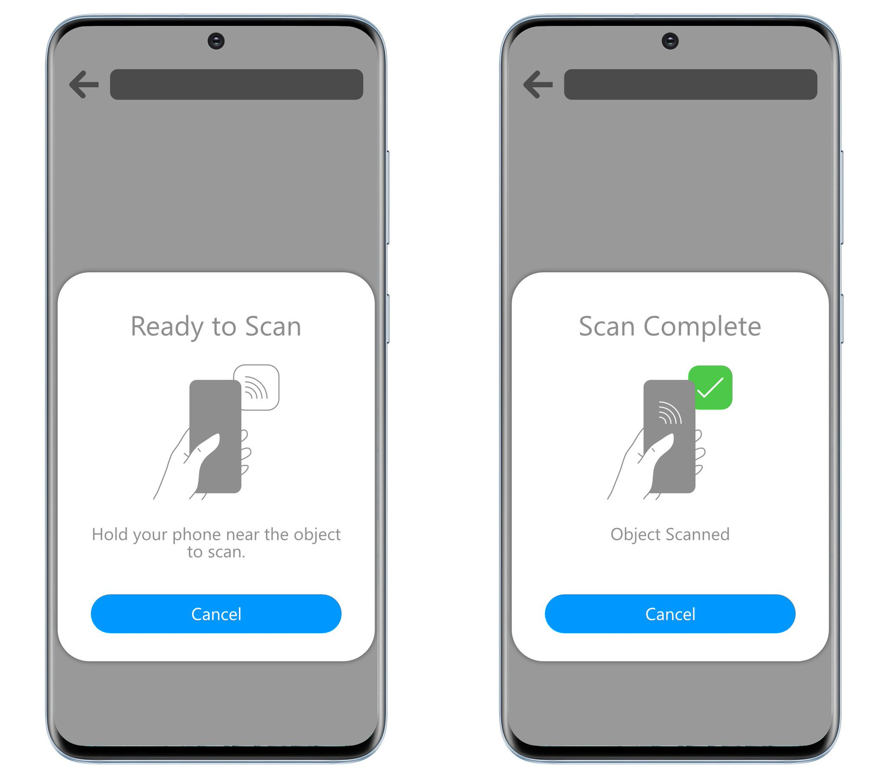
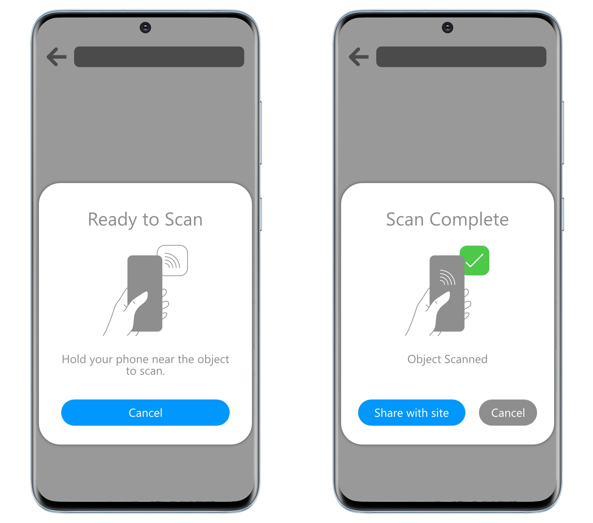

Near Field Communication (NFC) enables wireless communication between two devices at close proximity, usually less than a few centimeters. NFC is an international standard (ISO/IEC 18092) defining an interface and protocol for simple wireless interconnection of closely coupled devices operating at 13.56 MHz.
The hardware standard is defined in [[[NFC-STANDARDS]]].
This document defines an API to enable selected use cases based on NFC technology. The current scope of this specification is NDEF.
Low-level I/O operations (e.g. ISO-DEP, NFC-A/B, NFC-F) and Host-based Card Emulation (HCE) are not supported within the current scope.
Implementers need to be aware that this specification is considered unstable. Implementers who are not taking part in the discussions will find the specification changing out from under them in incompatible ways. Vendors interested in implementing this specification before it eventually reaches the Candidate Recommendation phase should subscribe to the repository on GitHub and take part in the discussions.
This document defines conformance criteria that apply to a single product: the UA (user agent) that implements the interfaces it contains.
Web NFC user scenario is as follows: Hold a device in close proximity to a passively powered NFC tag, such as a plastic card or sticker, in order to read and/or write data.
NFC works using magnetic induction, meaning that the reader (an active, powered device) will emit a small electric charge which then creates a magnetic field. This field powers the passive device which turns it into electrical impulses to communicate data. Thus, when the devices are within range, a read is always performed (see NFC Analog Specification and NFC Digital Protocol, NFC Forum, 2006). The peer-to-peer connection works in a similar way, as the device periodically switches into a so-called initiator mode in order to scan for targets, then later to fall back into target mode. If a target is found, the data is read the same way as for tags.
As NFC is based on existing RFID standards, many NFC chipsets support reading RFID tags, but some of these are only supported by single vendors and not part of the NFC standards. As such, this document specifies ways to interact with the NFC Data Exchange Format (NDEF).
The Augmented Backus-Naur Form (ABNF) notation used is specified in [[RFC5234]].
NFC stands for Near Field Communications, a short-range wireless technology operating at 13.56 MHz which enables communication between devices at a distance less than 10 cm. The NFC communications protocols and data exchange formats, and are based on existing radio-frequency identification (RFID) standards, including ISO/IEC 14443 and FeliCa. The NFC standards include ISO/IEC 18092[5] and those defined by the NFC Forum. See NFC Forum Technical Specifications for a complete listing.
An NFC adapter is the software entity in the underlying platform which provides access to NFC functionality implemented in a given hardware element (NFC chip). A device may have multiple NFC adapters, for instance a built-in one, and one or more attached via USB.
The way of reading the message may happen through proprietary technologies, which require the reader and the tag to be of the same manufacturer. They may also expose an NDEF message.
As currently spec'ed, peer-to-peer is not supported.
An NFC device is either an NFC peer, or an NFC tag.
NDEF is an abbreviation for NFC Forum Data Exchange Format, a lightweight binary message format that is standardized in [[!NFC-NDEF]].
An NDEF message encapsulates one or more application-defined NDEF records. NDEF messages can be stored on an NFC tag or exchanged between NFC-enabled devices.
The term NFC content denotes all bytes sent to or received from an NFC tag. In the current API it is synonym to NDEF message.
NFC is standardized in the NFC Forum and described in [[NFC-STANDARDS]].
The NFC Forum has mandated the support of five different tag types to be operable with NFC devices. The same is required on operating systems, such as Android.
In addition to that, the MIFARE Standard specifies a way for NDEF to work on top of the older MIFARE Standard, which may be optionally supported by implementers.
A note about the NDEF mapping can be found here: MIFARE Classic as NFC Type MIFARE Classic Tag.
MIFARE Standard is not an NFC Forum type and can only be read by devices using NXP hardware. Support for reading and writing to tags based on the MIFARE Standard is thus non-nominative, but the type is included due to the popularity and use in legacy systems.
In addition to data types standardized for NDEF records by the NFC Forum, many commercial products such as bus cards, door openers may be based on the MIFARE Standard which requires specific NFC chips (same vendor of card and reader) in order to function.
An NDEF record is a part of an NDEF message. Each record is a binary structure that contains a data payload, as well as associated type information. In addition to this, it includes information about how the data is structured, like payload size, whether the data is chunked over multiple records etc.
Only the first three bytes (lines in figure) are mandatory. First the header byte, followed by the TYPE LENGTH field and PAYLOAD LENGTH field, both of which may be zero.
| TNF value | Description |
|---|---|
| 0 | Empty record |
| 1 | NFC Forum [=well-known type record=] |
| 2 | MIME type record |
| 3 | Absolute-URL record |
| 4 | NFC Forum external type record |
| 5 | Unknown record |
| 6 | Unchanged record |
| 7 | Reserved for future use |
The IL field (bit `3`, id length) indicates whether an ID LENGTH field is present. If the IL field is `0`, then the ID field is not present either.
The SR field (bit `4`, short record) indicates a short record, one with a payload length <= `255` bytes. Normal records can have payload lengths exceeding `255` bytes up to a maximum of `4` GB. Short records only use one byte to indicate length, whether as normal records use `4` bytes (`2``32``-1` bytes).
The CF field (bit `5`, chunk flag) indicates whether the payload is chunked across multiple records.
Web NFC turns all received chunked records into logical records and transparently chunks sent payload when that is needed.
The ME field (bit `6`, message end) indicates whether this record is the last in the NDEF message.
The MB field (bit `7`, message begin) indicates whether this record is the first of the NDEF message.
The TYPE LENGTH field is an unsigned 8-bit integer that denotes the byte size of the TYPE field.
The TYPE field is a globally unique and maintained identifier that describes the type of the PAYLOAD field in a structure, encoding and format dictated by value of the TNF field.
The [[[!NFC-RTD]]] requires that the TYPE field names MUST be compared in case-insensitive manner.
The ID LENGTH field is an unsigned 8-bit integer that denotes the byte size of the ID field.
The ID field is an identifier in the form of a URI reference ([[RFC3986]]) that is unique, and can be absolute of relative (in the latter case the application must provide a base URI). Middle and terminating chunk records MUST NOT have an ID field, other records MAY have it.
The PAYLOAD LENGTH field denotes the byte size of the PAYLOAD field. If the SR field is `1`, its size is one byte, otherwise 4 bytes, representing an 8-bit or 32-bit unsigned integer, respectively.
The PAYLOAD field carries the application bytes. Any internal structure of the data is opaque to NDEF. Note that in certain cases discussed later, this field MAY contain an NDEF message as data.
An empty record's' TYPE LENGTH field, ID LENGTH field and PAYLOAD LENGTH field MUST be `0`, thus the TYPE field, ID field and PAYLOAD field MUST NOT be present.
The NFC Forum has standardized a small set of useful sub record types in [[NFC-RTD]] (Resource Type Definition specifications) called well-known type records, for instance text, URL, media and others. In addition, there are record types designed for more complex interactions, such as smart posters (containing optional embedded records for url, text, signature and actions), and handover records.
The type information stored in the TYPE field of well-known type records can be of two kinds: local types and global types.
NFC Forum local type that are defined by the NFC Forum or by an application, and always start with lowercase character or a number. Those are usually short strings that are unique only within the local context of the containing record. They are used when the meaning of the types doesn't matter outside of the local context of the containing record and when storage usage is a hard constraint. See Smart poster for an example on how local types are used.
A [=local type=] is thus defined in terms of a containing record type, and thus doesn't need any namespacing. For this reason the same local type name can be used within another record type with different meaning and different payload type.
NFC Forum global types are defined and managed by the NFC Forum and usually start with an uppercase character. Examples: "`T`" for text, "`U`" for URL, "`Sp`" for smart poster, "`Sig`" for signature, "`Hc`" for handover carrier, "`Hr`" for handover request, "`Hs`" for handover select, etc.
URI record is defined in [[NDEF-URI]]. The TNF field is `1` and the TYPE field is "`U`" (`0x55`). The first byte of the PAYLOAD field is a URI identifier code, in fact an index in an abbreviation table where the values are prepended to the rest of the URI. For instance the value `0` denotes no prepending, `1` denotes "`http://www.`", `0x04` denotes "`https://`"" and so on. The rest of the payload contains the rest of the URI as a UTF-8 string (and if the first byte is `0`, then it denotes the whole URI).
The URI is defined in [[RFC3987]] and in fact is a UTF-8 encoded IRI that can be a URN or a URL.
The [[NDEF-SMARTPOSTER]] states that applications SHALL use only the smart poster record if it is present in an NDEF message that also contains other URI records.
| Value | Description |
|---|---|
| 0 | Do the action |
| 1 | Save for later |
| 2 | Open for editing |
| 3..0xFF | Reserved for future use |
At the time of NDEF standardization the value `0` ("do the action") was intended for use cases like send an SMS, make a call or launch browser. Similarly, the value `1`, ("save the content for later processing") was intended for use cases like store the SMS in inbox, save the URL in bookmarks, or save the phone number to contacts. Also, the value `2` ("open for editing") was meant to open the smart poster content with a default application for editing.
Implementations don't need to implement any standardized behavior for the actions defined here. In this API it's up to the applications what actions they define (that may include the use cases above). However, Web NFC just provides the values.
NDEF Signature is defined [[NDEF-SIGNATURE]]. Its TYPE field contains "`Sig`" (`0x53`, `0x69`, `0x67`) and its PAYLOAD field contains version, signature and a certificate chain.
As currently spec'ed, this is not supported.
NFC handover is defined [[NFC-HANDOVER]] and the corresponding message structure that allows negotiation and activation of an alternative communication carrier, such as Bluetooth or WiFi. The negotiated communication carrier would then be used (separately) to perform certain activities between the two devices, such as sending photos to the other device, printing to a Bluetooth printer or streaming video to a television set.
As currently spec'ed, this is not supported.
In absolute-URL records the TYPE field contains the absolute-URL string, and not the payload.
NOTE: Some platforms, like Windows Phone have stored additional data in the payload, but any payload data in these records are ignored by other platforms such as Android. On Android, reading such a record, will attempt to load the URL in Chrome and it is as such not intended for client applications.
The NFC Forum external type records are for application specified data types and are defined in [[[NFC-RTD]]].
The external type is a URN with the prefix `"urn:nfc:ext:"` followed by the name of the owner [=domain=], adding a `U+003A` (`:`), then a non-zero type name, for instance `"urn:nfc:ext:w3.org:atype"`, stored as `"w3.org:atype"` in the TYPE field.
The unknown records are records that store opaque data without associated MIME type, meaning that the `application/octet-stream` default MIME type MAY be assumed. The [[NFC-NDEF]] specification recommends that NDEF parsers store or forward the payload without processing it.
Any implementation of Web NFC MUST transparently expose chunked records as single logical records.
A few NFC user scenarios have been enumerated here and in the Web NFC Use Cases document. The rudimentary Web NFC interactions are the following.
Reading an NFC tag containing an NDEF message, while the {{Document}} of the top-level browsing context using Web NFC is visible. For instance, a web page instructs the user to tap an NFC tag, and then receives information from the tag.
Note that an NFC write operation to an NFC tag always involves also a read operation.
Note that making an NFC tag permanently read-only always involves a read operation.
Users may attach one or more external NFC adapters to their devices, in addition to a built-in adapter. Users may use either NFC adapter.
This section shows how developers can make use of the various features of this specification.
Detecting if Web NFC is supported can be done by checking the {{NDEFReader}} object. Note that this does not guarantee that NFC hardware is available.
if ("NDEFReader" in window) { /* Scan and write NDEF Tags */ }
Writing data is generally straightforward, but there are a few gotcha's around how writing works with NFC.
An NFC reader works by polling, so in order to be able to write to a tag or making it permanently read-only, a tag first needs to be found and read, which means that polling needs to be initialized first.
If polling is not initiated already by first calling `scan()`, then the `write()` and `makeReadOnly()` methods will initiate it temporarily until a tag was found and read, and the operation was attempted.
This means that the flow is that first a read is performed as the tag is first found, then followed by a writing operation.
This means that if `scan()` is running and you have an event listener for the `reading` event, it will be dispatched once during a `write()` or `makeReadOnly()` operation, which might not be the intended behavior.
In the following sections we will discuss how you can easily deal with this behavior, but first a few simple examples.
Writing a text string to an NFC tag is straightforward.
const ndef = new NDEFReader();
ndef.write(
"Hello World"
).then(() => {
console.log("Message written.");
}).catch(error => {
console.log(`Write failed :-( try again: ${error}.`);
});
In order to write an NDEF record of URL type, simply use NDEFMessage. Here we rely on async/await.
const ndef = new NDEFReader();
try {
await ndef.write({
records: [{ recordType: "url", data: "https://w3c.github.io/web-nfc/" }]
});
} catch {
console.log("Write failed :-( try again.");
};
In order to write, a tag needs to be found and thus read. This gives you the ability to check whether it is actually a tag that you want to write to or not, by checking existing data or serial number.
For this reason, it is recommended calling `write()` from a `reading` event. Same applies to `makeReadOnly()`.
The below example shows how to coordinate between a common `reading` handler and one used specifically for a single write.
const ndef = new NDEFReader();
let ignoreRead = false;
ndef.onreading = (event) => {
if (ignoreRead) {
return; // write pending, ignore read.
}
console.log("We read a tag, but not during pending write!");
};
function write(data) {
ignoreRead = true;
return new Promise((resolve, reject) => {
ndef.addEventListener("reading", event => {
// Check if we want to write to this tag, or reject.
ndef.write(data).then(resolve, reject).finally(() => ignoreRead = false);
}, { once: true });
});
}
await ndef.scan();
try {
await write("Hello World");
console.log("We wrote to a tag!")
} catch(err) {
console.error("Something went wrong", err);
}
It can sometimes be useful to set a time limit on a write operation. Like you ask the user to touch a tag, and if no tag is found within a certain amount of time, then you time out.
const ndef = new NDEFReader();
ndef.onreading = (event) => console.log("We read a tag!");
function write(data, { timeout } = {}) {
return new Promise((resolve, reject) => {
const ctlr = new AbortController();
ctlr.signal.onabort = () => reject("Time is up, bailing out!");
setTimeout(() => ctlr.abort(), timeout);
ndef.addEventListener("reading", event => {
ndef.write(data, { signal: ctlr.signal }).then(resolve, reject);
}, { once: true });
});
}
await ndef.scan();
try {
// Let's wait for 5 seconds only.
await write("Hello World", { timeout: 5_000 });
} catch(err) {
console.error("Something went wrong", err);
} finally {
console.log("We wrote to a tag!");
}
This example shows what happens when {{NDEFReader/scan}} promise rejects and `readingerror` is fired.
const ndef = new NDEFReader();
ndef.scan().then(() => {
console.log("Scan started successfully.");
ndef.onreadingerror = (event) => {
console.log("Error! Cannot read data from the NFC tag. Try a different one?");
};
ndef.onreading = (event) => {
console.log("NDEF message read.");
};
}).catch(error => {
console.log(`Error! Scan failed to start: ${error}.`);
});
This example show you how to easily create a convenience function that just reads a single tag and then stops polling, saving battery life by cutting unneeded work.
The example could easily be extended to time out after a given amount of milliseconds.
const ndef = new NDEFReader();
function read() {
return new Promise((resolve, reject) => {
const ctlr = new AbortController();
ctlr.signal.onabort = reject;
ndef.addEventListener("reading", event => {
ctlr.abort();
resolve(event);
}, { once: true });
ndef.scan({ signal: ctlr.signal }).catch(err => reject(err));
});
}
read().then(({ serialNumber }) => {
console.log(serialNumber);
});
This example shows reading various different kinds of data which can be stored on a tag. If the tag is unformatted or contains an empty record, a text message is written with the value "Hello World".
const ndef = new NDEFReader();
await ndef.scan();
ndef.onreading = async ({ message }) => {
if (message.records.length == 0 || // unformatted tag
message.records[0].recordType == "empty") { // empty record
await ndef.write({
records: [{ recordType: "text", data: "Hello World" }]
});
return;
}
const decoder = new TextDecoder();
for (const record of message.records) {
switch (record.recordType) {
case "text":
const textDecoder = new TextDecoder(record.encoding);
console.log(`Text: ${textDecoder.decode(record.data)} (${record.lang})`);
break;
case "url":
console.log(`URL: ${decoder.decode(record.data)}`);
break;
case "mime":
if (record.mediaType === "application/json") {
console.log(`JSON: ${JSON.parse(decoder.decode(record.data))}`);
}
else if (record.mediaType.startsWith("image/")) {
const blob = new Blob([record.data], { type: record.mediaType });
const img = document.createElement("img");
img.src = URL.createObjectURL(blob);
img.onload = () => window.URL.revokeObjectURL(this.src);
document.body.appendChild(img);
}
else {
console.log(`Media not handled`);
}
break;
default:
console.log(`Record not handled`);
}
}
};
Filtering of relevant data sources can be done by the use of a custom record identifier, in this case "`/my-game-progress`". When we read the data, we immediately update the game progress by issuing a write with a custom NDEF data layout.
const ndef = new NDEFReader();
await ndef.scan();
ndef.onreading = async ({ message }) => {
if (message.records[0]?.id !== "/my-game-progress")
return;
console.log(`Game state: ${ JSON.stringify(message.records) }`);
const encoder = new TextEncoder();
const newMessage = {
records: [{
id: "/my-game-progress",
recordType: "mime",
mediaType: "application/json",
data: encoder.encode(JSON.stringify({
level: 3,
points: 4500,
lives: 3
}))
}]
};
await ndef.write(newMessage);
console.log("Message written");
};
Storing and receiving JSON data is easy with serialization and deserialization.
const ndef = new NDEFReader();
await ndef.scan();
ndef.onreading = (event) => {
const decoder = new TextDecoder();
for (const record of event.message.records) {
if (record.mediaType === "application/json") {
const json = JSON.parse(decoder.decode(record.data));
const article =/^[aeio]/i.test(json.title) ? "an" : "a";
console.log(`${json.name} is ${article} ${json.title}`);
}
}
};
const encoder = new TextEncoder();
await ndef.write({
records: [
{
recordType: "mime",
mediaType: "application/json",
data: encoder.encode(JSON.stringify({
name: "Benny Jensen",
title: "Banker"
}))
},
{
recordType: "mime",
mediaType: "application/json",
data: encoder.encode(JSON.stringify({
name: "Zoey Braun",
title: "Engineer"
}))
}]
});
Writing data requires tapping an NFC tag.
const ndef = new NDEFReader();
await ndef.scan();
ndef.onreading = async (event) => {
const decoder = new TextDecoder();
for (const record of event.message.records) {
console.log("Record type: " + record.recordType);
console.log("MIME type: " + record.mediaType);
console.log("=== data ===\n" + decoder.decode(record.data));
}
try {
await ndef.write("Overriding data is fun!");
} catch(error) {
console.log(`Write failed :-( try again: ${error}.`);
}
};
Read NDEF messages for 3 seconds by using {{NDEFScanOptions/signal}}.
const ndef = new NDEFReader();
const ctrl = new AbortController();
await ndef.scan({ signal: ctrl.signal });
ndef.onreading = () => {
console.log("NDEF message read.");
};
ctrl.signal.onabort = () => {
console.log("We're done waiting for NDEF messages.");
};
// Stop listening to NDEF messages after 3s.
setTimeout(() => ctrl.abort(), 3_000);
const ndef = new NDEFReader();
const encoder = new TextEncoder();
await ndef.write({ records: [
{
recordType: "smart-poster", // Sp
data: { records: [
{
recordType: "url", // URL record for the Sp content
data: "https://my.org/content/19911"
},
{
recordType: "text", // title record for the Sp content
data: "Funny dance"
},
{
recordType: ":t", // type record, a local type to Sp
data: encoder.encode("image/gif") // MIME type of the Sp content
},
{
recordType: ":s", // size record, a local type to Sp
data: new Uint32Array([4096]) // byte size of Sp content
},
{
recordType: ":act", // action record, a local type to Sp
// do the action, in this case open in the browser
data: new Uint8Array([0])
},
{
recordType: "mime", // icon record, a MIME type record
mediaType: "image/png",
data: await (await fetch("icon1.png")).arrayBuffer()
},
{
recordType: "mime", // another icon record
mediaType: "image/jpg",
data: await (await fetch("icon2.jpg")).arrayBuffer()
}
]}
}
]});
External type records can be used to create application defined records. These records may contain an NDEF message as payload, with its own NDEF records, including local types that are used in the context of the application.
Note that the smart poster record type also contains an NDEF message as payload.
As NDEF gives no guarantee on the ordering of records, using an external type record with an NDEF message as payload, can be useful for encapsulating related data.
This example shows how to read an external record for social posts, which contains an NDEF message, containing a text record and a record with the local type "act" (action), with definition borrowed from smart poster, but used in local application context.
const ndef = new NDEFReader();
await ndef.scan();
ndef.onreading = (event) => {
const externalRecord = event.message.records.find(
record => record.type == "example.com:smart-poster"
);
let action, text;
for (const record of externalRecord.toRecords()) {
if (record.recordType == "text") {
const decoder = new TextDecoder(record.encoding);
text = decoder.decode(record.data);
} else if (record.recordType == ":act") {
action = record.data.getUint8(0);
}
}
switch (action) {
case 0: // do the action
console.log(`Post "${text}" to timeline`);
break;
case 1: // save for later
console.log(`Save "${text}" as a draft`);
break;
case 2: // open for editing
console.log(`Show editable post with "${text}"`);
break;
}
};
External type records can be used to create application defined records that may even contain an NDEF message as payload.
const ndef = new NDEFReader();
await ndef.write({ records: [
{
recordType: "example.game:a",
data: {
records: [
{
recordType: "url",
data: "https://example.game/42"
},
{
recordType: "text",
data: "Game context given here"
},
{
recordType: "mime",
mediaType: "image/png",
data: getImageBytes(fromURL)
}
]
}
}
]});
Unknown type records may be useful inside external type records as developers know what they represent and therefore can avoid specifying the mime type.
const encoder = new TextEncoder();
const ndef = new NDEFReader();
await ndef.write({ records: [
{
recordType: "example.com:shoppingItem", // External record
data: {
records: [
{
recordType: "unknown", // Shopping item name
data: encoder.encode("Food")
},
{
recordType: "unknown", // Shopping item description
data: encoder.encode("Provide nutritional support for an organism.")
}
]
}
}
]});
const ndef = new NDEFReader();
await ndef.scan();
ndef.onreading = (event) => {
const shoppingItemRecord = event.message.records[0];
if (shoppingItemRecord?.recordType !== "example.com:shoppingItem")
return;
const [nameRecord, descriptionRecord] = shoppingItemRecord.toRecords();
const decoder = new TextDecoder();
console.log("Item name: " + decoder.decode(nameRecord.data));
console.log("Item description: " + decoder.decode(descriptionRecord.data));
};
Making an NFC tag permanently read-only is straightforward.
const ndef = new NDEFReader();
ndef.makeReadOnly().then(() => {
console.log("NFC tag has been made permanently read-only.");
}).catch(error => {
console.log(`Operation failed: ${error}`);
});
const ndef = new NDEFReader();
try {
await ndef.write("Hello world");
console.log("Message written.");
await ndef.makeReadOnly();
console.log("NFC tag has been made permanently read-only after writing to it.");
} catch (error) {
console.log(`Operation failed: ${error}`);
}
The content of any NDEF message is exposed by the NDEFMessage interface:
[SecureContext, Exposed=Window]
interface NDEFMessage {
constructor(NDEFMessageInit messageInit);
readonly attribute FrozenArray<NDEFRecord> records;
};
dictionary NDEFMessageInit {
required sequence<NDEFRecordInit> records;
};
The records property represents a list of NDEF records defining the NDEF message.
The NDEFMessageInit dictionary is used to initialize an NDEF message.
The content of any NDEF record is exposed by the NDEFRecord interface:
[SecureContext, Exposed=Window]
interface NDEFRecord {
constructor(NDEFRecordInit recordInit);
readonly attribute USVString recordType;
readonly attribute USVString? mediaType;
readonly attribute USVString? id;
readonly attribute DataView? data;
readonly attribute USVString? encoding;
readonly attribute USVString? lang;
sequence<NDEFRecord>? toRecords();
};
dictionary NDEFRecordInit {
required USVString recordType;
USVString mediaType;
USVString id;
USVString encoding;
USVString lang;
any data; // DOMString or BufferSource or NDEFMessageInit
};
The mediaType property represents the MIME type of the NDEF record payload.
The recordType property represents the NDEF record types.
The NFC NDEF specifications uses the terms "message identifier" and "payload identifier" instead of record identifier, but the identifier is tied to each record and not the message (collection of records), and it may be present when no payload is.
The encoding attribute represents the [=encoding/name|encoding name=] used for encoding the payload in the case it is textual data.
The lang attribute represents the [=language tag=] of the payload in the case that was encoded.
A language tag is a string that matches the
production of a Language-Tag defined in the [[BCP47]]
specifications (see the IANA
Language Subtag Registry for an authoritative list of possible
values). That is, a language range is composed of one or more
subtags that are delimited by a U+002D HYPHEN-MINUS ("-").
For example, the 'en-AU' language range represents
English as spoken in Australia, and 'fr-CA' represents
French as spoken in Canada. Language tags that meet the validity
criteria of [[RFC5646]] section 2.2.9 that can be verified without
reference to the IANA Language Subtag Registry are considered
structurally valid.
The data property represents the PAYLOAD field data.
The toRecords() method, when invoked, MUST return the result of running convert NDEFRecord.data bytes with the NDEF Record.
The NDEFRecordInit dictionary is used to initialize an NDEF record with its record type recordType, and optional record identifier id and payload data data.
The mapping from data types of an NDEFRecordInit to NDEF record types is presented in the algorithmic steps which handle the data and described in the [[[#steps-receiving]]] and [[[#writing-content]]] sections.
To convert NDEFRecord.data bytes given a |record:NDEFRecord|, run these steps:
This string defines the allowed record types for an NDEFRecord. The [[[#data-mapping]]] section describes how it is mapped to NDEF record types.
A standardized well known type name can be one of the following:
In addition to [=well known type names=] it is also possible for organizations to create a custom external type name, which is a string consisting of a [=domain=] name and a custom type name, separated by a colon `U+003A` (`:`).
Applications MAY also use a local type name, which is a string that MUST start with lowercase character or a number, representing a type for an NFC Forum [=local type=]. It is typically used in a record of an NDEFMessage that is the payload of a parent NDEFRecord, for instance in a smart poster. The context of the local type is the parent record whose payload is the NDEFMessage to which this record belongs and the local type name SHOULD NOT conflict with any other type names used in that context.
Any implementation of Web NFC MUST transparently expose chunked records as single logical records, therefore unchanged records are not explicitly represented.
Two well-known type records (including any NFC Forum local type and any NFC Forum global type) MUST be compared character by character in case-sensitive manner.
Two external types MUST be compared character by character, in case-insensitive manner.
The binary representation of any well-known type record and external type MUST be written as a relative URI (RFC 3986), omitting the namespace identifier (NID) "`nfc`" and namespace specific string (NSS) "`wkt`" and "`ext`", respectively, i.e. omitting the "`urn:nfc:wkt:`" and "`urn:nfc:ext:`" prefixes. For instance, "`urn:nfc:ext:company.com:a" is stored as "`company.com:a`" and the well-known type records of a Text record is "`urn:nfc:wkt:T`", but it is stored as "`T`".
The mapping from data types of an NDEFRecordInit to NDEF record types, as used in the [[[#writing-content]]] section is as follows:
| {{recordType}} | {{mediaType}} | {{data}} | record type | [=TNF field=] | [=TYPE field=] |
|---|---|---|---|---|---|
| "`empty`" | unused | unused | Empty record | 0 | unused |
| "`text`" | unused |
{{BufferSource}} or {{DOMString}} |
[=Well-known type record=] | 1 | "`T`" |
| "`url`" | unused | {{DOMString}} | [=Well-known type record=] | 1 | "`U`" |
| "`smart-poster`" | unused | {{NDEFMessageInit}} | [=Well-known type record=] | 1 | "`Sp`" |
| [=local type name=] prefixed by a colon `U+003A` (`:`), e.g., "`:act`", "`:s`", and "`:t`" | unused | {{BufferSource}} or {{NDEFMessageInit}} | [=Local type=] record* | 1 | [=local type name=], e.g., "`act`", "`s`", and "`t`" |
| "`mime`" | [= MIME type =] | {{BufferSource}} | MIME type record | 2 | [= MIME type =] |
| "`absolute-url`" | unused | {{DOMString}} url | Absolute-URL record | 3 | [=Absolute-URL=] |
| [=external type name=] | unused |
{{BufferSource}} or {{NDEFMessageInit}} |
External type record | 4 | [=external type name=] |
| "`unknown`" | unused | {{BufferSource}} | [=Unknown record=] | 5 | unused |
* A [=local type=] record has to be embedded with the NDEFMessage payload of another record.
The mapping from NDEF record types to NDEFRecord, as used for incoming NDEF messages described in the [[[#steps-receiving]]] section, is as follows.
| record type | [=TNF field=] |
[=TYPE field=] | {{recordType}} | {{mediaType}} |
|---|---|---|---|---|
| [=Empty record=] | 0 | unused | "`empty`" | `null` |
| [=Well-known type record=] | 1 | "`T`" | "`text`" | `null` |
| [=Well-known type record=] | 1 | "`U`" | "`url`" | `null` |
| [=Well-known type record=] | 1 | "`Sp`" | "`smart-poster`" | `null` |
| [=Local type=] record* | 1 | [=local type name=], e.g., "`act`", "`s`", and "`t`" | [=local type name=] prefixed by a colon `U+003A` (`:`), e.g., "`:act`", "`:s`", and "`:t`" | `null` |
| [=MIME type record=] | 2 | [=MIME type=] | "`mime`" | The MIME type used in the NDEF record |
| [=Absolute-URL record=] | 3 | URL | "`absolute-url`" | `null` |
| [=External type record=] | 4 | [=external type name=] | [=external type name=] | `null` |
| Unknown record | 5 | unused | "`unknown`" | `null` |
The NDEFReader is an object that exposes NFC functionality to the browsing context: reading NDEF messages when a device, such as a tag, is within the magnetic induction field. Also, it is used for writing NDEF messages to NFC tags within range.
typedef (DOMString or BufferSource or NDEFMessageInit) NDEFMessageSource;
[SecureContext, Exposed=Window]
interface NDEFReader : EventTarget {
constructor();
attribute EventHandler onreading;
attribute EventHandler onreadingerror;
Promise<undefined> scan(optional NDEFScanOptions options={});
Promise<undefined> write(NDEFMessageSource message,
optional NDEFWriteOptions options={});
Promise<undefined> makeReadOnly(optional NDEFMakeReadOnlyOptions options={});
};
[SecureContext, Exposed=Window]
interface NDEFReadingEvent : Event {
constructor(DOMString type, NDEFReadingEventInit readingEventInitDict);
readonly attribute DOMString serialNumber;
[SameObject] readonly attribute NDEFMessage message;
};
dictionary NDEFReadingEventInit : EventInit {
DOMString? serialNumber = "";
required NDEFMessageInit message;
};
The NDEFMessageSource is a union type representing argument types accepted by the {{NDEFReader/write()}} method.
The NDEFReadingEvent is the event being dispatched on new NFC readings. The serialNumber property represents the serial number of the device used for anti-collision and identification, or empty string in case none is available. The message is an NDEFMessage object.
NDEFReadingEventInit is used to initialize a new event with a serial number and the NDEFMessageInit data via the message member. If serialNumber is not present or is `null`, empty string will be used to init the event.
Though most tags will have a stable unique identifier (UID), not all have one and some tags even create a random number on each read. The serial number usually consists of 4 or 7 numbers, separated by `:`.
An {{NDEFReader}} object has the following internal slots:
| Internal Slot | Initial value | Description (non-normative) |
|---|---|---|
| [[\WriteOptions]] | `null` | The {{NDEFWriteOptions}} value for writing. |
| [[\WriteMessage]] | `null` | The {{NDEFMessage}} to be written. It is initially unset. |
The onreading is an {{EventHandler}} which is called to notify that new reading is available.
The onreadingerror is an {{EventHandler}} which is called to notify that an error happened during reading.
The relevant settings object of the active document of a browsing context which supports NFC has an associated NFC state record with the following internal slots:
| Internal Slot | Initial value | Description (non-normative) |
|---|---|---|
| [[\Suspended]] | `false` | A boolean flag indicating whether NFC functionality is suspended or not, initially `false`. |
| [[\ActivatedReaderList]] | empty set | A set of {{NDEFReader}} instances. |
| [[\PendingWrite]] | empty | A <|promise:Promise|, |writer:NDEFReader|> tuple where |promise| holds a pending {{Promise}} and |writer| holds an {{NDEFReader}}. |
| [[\PendingMakeReadOnly]] | empty | A <|promise:Promise|, |writer:NDEFReader|> tuple where |promise| holds a pending {{Promise}} and |writer| holds an {{NDEFReader}}. |
The activated reader objects is the value of the [[\ActivatedReaderList]] internal slot.
The pending write tuple is the value of the [[\PendingWrite]] internal slot.
The pending makeReadOnly tuple is the value of the [[\PendingMakeReadOnly]] internal slot.
NFC is suspended if the [[\Suspended]] internal slot is `true`.
To suspend NFC, set the [[\Suspended]] internal slot to `true`.
To resume NFC, set the [[\Suspended]] internal slot to `false`.
Internal slots are used only as a notation in this specification, and implementations do not necessarily have to map them to explicit internal properties.
The Web NFC API is a [=default powerful feature=] which is identified by
the [=powerful feature/name=] "nfc".
nfc".
nfc" from the user. If
that is granted, return `true`.
The request permission
steps are not yet clearly defined.
At this point the UA asks the user about the policy to be used
with "nfc" for the given origin and
global object, if the user grants permission, return
`true`.
When the user agent updates the visibility state of the [=environment settings object / responsible document=] of the current settings object, it must run these steps:
The term suspended refers to NFC operations being suspended, which means that no NFC content is written by NDEFReaders, and no received NFC content is presented to any {{NDEFReader}} while being suspended.
Rejecting the promise will clear the pending write tuple.
Rejecting the promise will clear the pending makeReadOnly tuple.
To release NFC on an environment settings object, perform the following steps:
The UA must release NFC given the document's relevant settings object as additional unloading document cleanup steps.
dictionary NDEFWriteOptions {
boolean overwrite = true;
AbortSignal? signal;
};
When the value of the overwrite property is `false`, the write algorithm will read the NFC tag to determine if it has NDEF records on it, and if yes, it will not execute any pending write.
The signal property allows to abort the {{NDEFReader/write()}} operation.
dictionary NDEFMakeReadOnlyOptions {
AbortSignal? signal;
};
The signal property allows to abort the {{NDEFReader/makeReadOnly()}} operation.
dictionary NDEFScanOptions {
AbortSignal signal;
};
The signal property allows to abort the {{NDEFReader/scan()}} operation.
This section describes how to write an NDEF message to an NFC tag when it is next time in proximity range before a timer expires. At any time there is a maximum of one NDEF message that can be set for writing for an origin until the current message is sent or the write is aborted.
The UA might abort message write at this point. The reasons for termination are implementation details. For example, the implementation might be unable to support the requested operation.
A write replaces all previously configured write operations.
If NFC is suspended, continue waiting until promise is aborted by the user or an NFC tag comes within communication range.
If the NFC tag in proximity range is unformatted and NDEF-formatable, format it and write |output| as buffer.
Multiple adapters should be used sequentially by users. There is very little likelihood that a simultaneous tap will happen on two or multiple different and connected NFC adapters. If it happens, the user will likely need to repeat the taps until success, preferably one device at a time. The error here gives an indication that the operation needs to be repeated. Otherwise the user may think the operation succeeded on all connected NFC adapters.
For practical purposes there is only so much room for storing an NDEF message and so, this specification sets a limit on the depth of nested messages which developers are unlikely to hit. See issue #620.
Web NFC currently allows writing external type and local type records in smart poster. Also, empty records are allowed. Applications MAY ignore any extra records inside the smart poster.
Icon record media types could be limited to `"image/"` or `"video/"`, but the [[NDEF-SMARTPOSTER]] specification does actually allow other media type records in a smart poster, which can be treated in an application-specific manner, for instance a vCard contact card using one of its associated MIME types.
The [[NFC-RTD]] specifies the URN prefix “`urn:nfc:ext:`” as well, but it is not stored in the NDEF record, therefore Web NFC applications SHOULD NOT specify the URN prefix when creating external type records.
The [[NFC-RTD]] requires that external type names are represented with the URN prefix “`urn:nfc:ext:`”, e.g. when reading NDEF messages. However, since external type records are distinguished by having the TNF FIELD set to `0x04`, there is no risk seen for type name clashing. Also, there are W3C TAG recommendations to avoid using URNs in the Web. Therefore, Web NFC does not use the URN prefix neither when reading or writing NDEF messages.
To validate external type given |input:USVString|, run these steps:
To validate local type given an |input:USVString| run these steps:
This is useful when clients specifically want to write text in a [=well-known type record=]. Other options would be to use the value "`mime`" with an explicit MIME type text type, which allows for better differentiation, e.g. when using "`text/xml`", or "`text/vcard`".
The [[NDEF-SMARTPOSTER]] specification allows only one URL in a smart poster and that MUST be a single URI record.
This section describes how to make an NFC tag permanently read-only when it is in proximity range. At any time there is a maximum of one request for an origin until the NFC tag is made permanently read-only or the operation is aborted.
The UA might abort at this point. The reasons for termination are implementation details. For example, the implementation might be unable to support the requested operation.
A make read-only operation replaces all previously configured make read-only operations.
If NFC is suspended, continue waiting until promise is aborted by the user or an NFC tag comes within communication range.
This operation is a one-way process and cannot be reversed. Once an NFC tag has been made read-only, it can't be written anymore.
To listen for NFC content, the client MUST activate an {{NDEFReader}} instance by calling NDEFReader.scan(). When attaching an event listener for the "`reading`" event on it, NFC content is accessible to the client.
If there are any {{NDEFReader}} instances in activated reader objects then the UA MUST listen to NDEF messages on all connected NFC adapters.
Incoming NFC content is matched using {{NDEFReader}} instances.
The UA SHOULD represent an unformatted NFC tag as an NDEF message containing no NDEF records, i.e. an empty array for its {{NDEFMessage/records}} property.
To dispatch NFC content given a |serialNumber:serialNumber| of type serialNumber and a |message:NDEFMessage| of type NDEFMessage, run these steps:
As chunked records are not allowed as sub records, ignore bit 5 (CF field) is ignored.
Applications may call toRecords() on data to
parse it to NDEF records, or may parse it themselves.
Applications can parse this value as a 32 bit unsigned integer that denotes the size of the object the URI record in the smart-poster refers to.
Applications can parse this value as a string that contains an [[RFC2048]] media type that denotes the media type of the object the URI record in the smart-poster refers to.
Applications can parse this value as an 8 bit unsigned integer for which the values are defined here.
This specification relies on a blocklist file to restrict the set of NFC devices a website can access.
The result of parsing the blocklist at a |url:URL| is a list of historical bytes hexadecimal values, produced by the following algorithm:
The blocklist is the result of parsing the blocklist at https://github.com/w3c/web-nfc/blob/gh-pages/blocklist.txt. The UA should re-fetch the blocklist periodically, but it’s unspecified how often.
An NFC device is blocklisted if the blocklist’s value contains the device's historical bytes hexadecimal values. In ISO 14443-4 terminology, the historical bytes are a subset of the RATS (Request for Answer To Select) response.
Implementations need to make sure that when the user authorizes a method which is part of the Web NFC API, only that action is run, without side effects.
By default, NDEF doesn't provide any way to make the content trusted beyond allowing tags to be made permanently read-only after writing data to them. This can even be done from a factory setting.
Data written by the use of this API is not signed or encrypted automatically, which follows existing native NFC APIs. In order to protect the integrity and authenticity of NDEF messages, the NFC Forum introduced [[NDEF-SIGNATURE]]. Using NDEF signature and key management is the responsibility of the application.
For trusting the confidentiality of the data exchanged via NFC, applications may use encrypted NFC content.
For trusting the integrity of the data exchanged via NFC, applications may use an NDEF signature, with key management based on Public Key Infrastructure (PKI).
Security considerations for MIME types in general are discussed in [[RFC2048]] and [[RFC2046]].
The comparison to barcodes or QR codes is appropriate because NFC tags are another non-human-readable method of exchanging data and sharing them can have unforeseen privacy and security implications. For a web site to read a QR code, a piece of interruptive UI must be used (the camera) which captures an image and makes it apparent that the contents of this image (including the QR code) will be available to the web page, making it clear to the user that scanning is being performed.
Scanning a tag with NFC requires the user to place the scanning device (e.g. phone) in close proximity to the NFC tag - usually 5-10 cm, 2-4 inches.
Scanning a tag when a Web NFC scan is not active, triggers the host OS handling. Thus launching URLs and apps from scanning a NFC tag is not handled and supported by Web NFC itself.
Furthermore, Web NFC scanning needs to be activated from a user interaction, and scanning is paused when the web site is not in focus or the device screen turns off (i.e. is not unlocked). This is put in place so that accidental scans are not likely to happen.
Web NFC further recommends that the implementation makes it very clear UX-wise to the user that data will be scanned when placing the scanning device in close proximity to a NFC tag - basically mimicking the UX flow of scanning a QR code.
There are many options for doing so, like playing back a sound or showing some persistent UI while the scanning can happen, for instance a modal dialog with the ability to cancel at any point.
An implementation could also show the data that is about to be uploaded, postpone sharing the read data until the user OK'd it and even show some UI allowing the user to select which records to share.
When the user scans a tag, at that point the web application has access to read the data on the tag, and in case it is not read-only, also to write data to the tag. Consumer stickers for private usage (e.g. in the maker community) are often unlocked (read + write), whereas commercial deployment of NFC are read-only.
An older protocol SNEP (Simple NDEF Exchange Protocol) allowed active devices (e.g. a phone) to receive NDEF data from another active device, but it is unsupported by Web NFC and it is currently being deprecated on supported native platforms.
A newer protocol TNEP (Tag NDEF Exchange Protocol) allows bidirectional communication between a scanner device (e.g. phone) and actively powered device like an IOT device. It is currently unsupported by Web NFC, and furthermore it has restrictions on what input to accept and the IOT device must ensure that the accepted records are valid.
If the tag contains privacy sensitive data, such data will be shared with the site. Potentially, not immediately if the UX requires the user to confirm the data exchange before doing so.
In some cases it might be obvious that the tag/device contains privacy sensitive data, say in case of NFC equipped conference badgets and business cards. This would also be the case with an NFC equipped glucose meter, which can indicate that you, or someone in the close family, are a diabetes patient.
In other cases it might be less obvious that that can happen, but a user might have used an app or website to write data to a tag that unknowingly to the user encoded a user id or the like, which can later be read back by any other site.
Private and unexpected data can also be stored in files (e.g. word pressing documents, PDFs or camera images) which are uploaded using the file upload API. The mitigations associated with the Web NFC API are stronger than those associated with file upload and the data less likely to be personally identifiable.
A scan of a tag might also reveal user location if the website knows how to identify the tag and know the tags location in the real world, like if it is mounted inside a museum. It might also be able to deduct it somewhat as for instance FeliCa NFC tags are mostly used in Japan, but Web NFC doesn’t reveal what tag technology is used.
This does not bring the web advertising and tracking model into the real world, because it requires an action by the user and it cannot be triggered in the background; and with proper UX it should be clear that scanning is active.
There is also the fear that writing to a NFC tag can ruin it or “brick it”. As NFC tags were designed to be read by multiple user applications, NDEF tags have been designed with an easy way to make devices permanently read-only and can even be configured that way from a factory.
NDEF is a simple exchange format for reading and writing data and not for bi-directional communication. NFC supports multiple communications formats based on lower tech (thus not locked as read-only as NDEF) and none of these are supported by Web NFC.
This section details some of the things that users ought to be aware of when using NFC. It is recommendated that implementations help educate the users of given facts before or when related NFC actions are performed.
When a site has access to read NFC content, then the data of the scanned tags is shared with the site, in a similar way to uploading files and images. As with any site, it is up to the user whether to trust that the site handles this data properly and in the intended manner.
Deployed NFC solutions, like tags in stores etc, should always be made read-only in order to ensure they are not modified by mistake or as part of a malicious act.
Private tags and stickers are often unlocked (writable) from the factory and the user should be aware that such tags might be overwritten/modified by scanning them.
A fixed tag may encode its ID or location in the data, meaning that reading it exposes that information to the site that knows the physical location of the tag, which then can deduct the location the read took place. That combined with being logged into a service, can share your location data with the site.
Data written is readable by other apps and sites with granted read access Any NDEF data on a tag can be read by any app or web site with the proper access, so if that is not intended then the data should be encrypted in a secure manner that only who is supposed to read it can.
NFC can only read one tag at the time, but multiple tags can be detected and one of the tags can be selected as the tag to communicate with.
Use cases for this could be having multiple smart cards (NFC based) in your wallet and not wanting to take the card out.
This is mostly useful for payment cards and travel cards that are read by external hardware and thus not a use-case for Web NFC. For Web NFC, we do not allow reading when there are multiple tags available, preventing the following attack vector.
There is an attack vector, where someone places another malicious NFC tag/sticker on top of a legitimate tag, in order to load the wrong app/site, or inject wrong data into the right app/site. They can do so by cloning the data of the original tag and modifying it - either by changing the URL to load a malicious app/site, or by changing the data to inject malicious data in the right app/site. Example: the tag is supposed to take you to https://example.com but is modified to take you to https://exаmple.com (that is with a Cyrillic а) - it looks legitimate and you might now to giving sensitive data to a malicious site.
Loading web sites from a tag is outside the scope of Web NFC, but it is recommended for user agents to not auto load URLs when multiple tags are available due to the above attack vector.
By disallowing reading when there are multiple tags available, Web NFC protects well against injecting wrong/malicious data into a site as shielding the existing NFC tag is quite difficult as it requires ferrite shielding which is quite visible. Metal interferes with the magnetic field and makes tags not readable.
The following attacker patterns have been considered:
An introduction to NFC security is found here. Potential threats for Web NFC are given below.
Implementations SHOULD use a mechanism to obtain permission, for instance an explicit permission given by the user. The [[[PERMISSIONS]]] API is suggested to be used by UAs for implementing NFC related permissions.
Implementations MAY use per-session/ephemeral permissions.
Implementations MAY show an overlay dialog whenever the NFC adapter is being accessed by the web page (e.g. there is an ongoing scan) in order to warn user.
For trusting the confidentiality of the data exchanged via NFC, applications may use encrypted NFC content with key management based on Public Key Infrastructure (PKI). Key management is out of the scope of Web NFC.
For trusting the integrity of the data exchanged via NFC, user agents MAY use an NDEF signature with a Public Key Infrastructure for key management.
For tags signed with NDEF signature version 1.0 ([[NFC-SECURITY]]), the signature is applied only to the TYPE field, ID field and PAYLOAD field, leaving out the first byte of the NDEF header, allowing surface to attacks. Version 2.0 of [[NFC-SECURITY]] included tag hardware attributes in the signature and allowed for shorter certificates.
An NDEF signature covers the preceding records until another NDEF signature or the beginning of the NDEF message is reached.
In order to mitigate known vulnerabilities of NDEF signature, it is recommended that applications always sign a full NDEF message with a single NDEF signature, and use the right tool chain and security policies for creating and verifying signatures.
This section lists the normative security policies for implementations.
Only secure contexts are allowed to access NFC content. Browsers MAY ignore this rule for development purposes only.
Web NFC functionality is allowed only for the {{Document}} of the top-level browsing context, where its {{Document/visibilityState}} is `"visible"`.
This also means that UAs should block access to the NFC radio if the display is off or the device is locked. For backgrounded web pages, receiving and writing NFC content must be suspended.
Making an NFC tag permanently read-only MUST obtain permission, or otherwise fail. See the [[[#making-content-read-only]]] section.
Setting up listeners for reading NFC content SHOULD obtain permission.
Writing NFC content to an NFC tag MUST obtain permission. See the [[[#writing-content]]] section.
All permission that are preserved beyond the current browsing session MUST be revocable.
Web NFC includes a blocklist of vulnerable NFC devices to prevent websites from taking advantage of them.
When listening for and writing NFC content, the UA MAY warn the user that the given origin may be able to infer physical location.
When the payload data on NFC content is untrusted, it MUST NOT be used by the UA to do automatic handling of the content, such as opening a web page with a URL found in an NFC tag, or installing an application, or other actions, unless the user approves that.
The editors would like to thank Jeffrey Yasskin, Anne van Kesteren, Anssi Kostiainen, Domenic Denicola, Daniel Ehrenberg, Jonas Sicking, Don Coleman, Salvatore Iovene, Rijubrata Bhaumik, Wanming Lin, Han Leon, Ryan Sleevi, Balázs Engedy, Theodore Olsauskas-Warren, Reilly Grant, Diego González and Daniel Appelquist for their contributions to this document.
Special thanks to Luc Yriarte and Samuel Ortiz for their initial work on exposing NFC to the web platform, and for their support for the current approach. Also, special thanks to Elena Reshetova for the contributions to the Security and Privacy section.